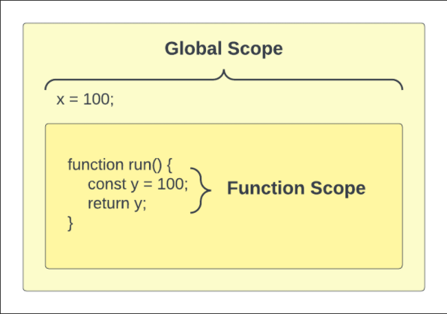

Scope is an important concept, not only in JavaScript, but in many other programming languages. Scope is the current area or context of a specific piece of code. There are certain rules for what is accessible in specific scopes.
In JavaScript, when we write code in the global scope it is available everywhere, including functions. If we are NOT inside of a function or any kind of block, such as an if statement or a loop, then we are in the global scope.
window objectThe browser creates a global object called window. This object has a ton of methods and properties on it that are available to us that we'll be looking at later on in the course.
The alert method belongs to the window object.
window.alert('Hello World');Since the window object is the most top-level object in the browser environment, we don't need to use window
alert('Hello World');There is an innerWidth property on the window object. We could use that anywhere as well
console.log(window.innerWidth);We can use it in a function as well because it is global
function run() {
console.log(window.innerWidth);
}If I simply create a variable at the top of a JavaScript file, this is a global variable in the global scope and I can access it anywhere.
const x = 100;
console.log(x); // 100If we try to access x in the run() function, we can because it's global.
function run() {
console.log(x); // 100
}Function scope is the scope that is available to all code inside of a function. Any variables we define here will be available only inside of the function.
function add() {
const y = 50;
}
console.log(y); // ReferenceError: y is not definedSince x is global, I could use that in the add() function
function add() {
const y = 50;
console.log(x + y); // 150
}If I create a variable called x in the function, it will overwrite the global variable and I can no longer access it. This is called variable shadowing.
function add() {
const x = 1;
const y = 50;
console.log(x + y); // 51
}Whatever scope we are currently working in or talking about is called the local scope.